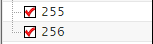
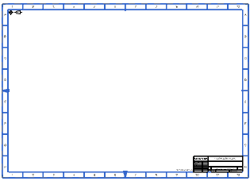

添加标准图纸模板
为了便于比较，在新图纸页中添加标准图纸模板，但先确保标准模板的默认图层为可见。
-
按下 Ctrl+L 组合键，或者选择格式→图层设置。
-
在图层设置对话框中，确保图层255与图层256为可选。

-
点击关闭。
-
在部件导航器
 中，右击图纸节点并选择插入图纸页。
中，右击图纸节点并选择插入图纸页。 -
在图纸页对话框的大小组中，确保选择的是使用模板
 ，并在模板列表框中选择 A1 号大小。
，并在模板列表框中选择 A1 号大小。 -
点击确定。
-
点击关闭以关闭填充标题块对话框，然后查看新图纸页的边界。

-
关闭部件。